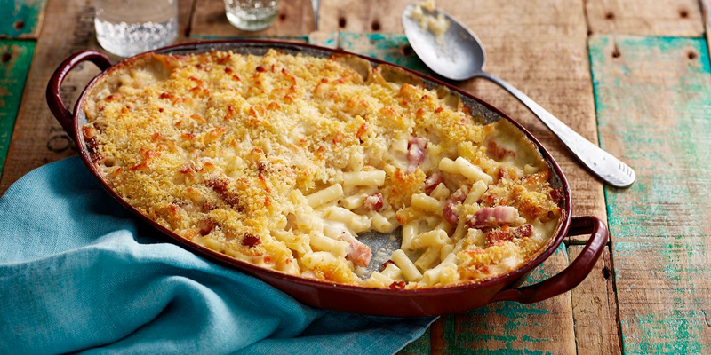

Mac & Cheese

Description
The secret of good Italian dishes is ‘esagera’ – put more of everything in –
and so it is with this mac & cheese recipe. There’s masses of cheese and
plenty of smoked bacon.
Ingredients
- 100g/3½oz butter, plus extra for greasing
- 100g/3½oz plain flour
- 1 tsp Dijon mustard
- 1.2 litres/2 pints full-fat milk
- 75ml/2½fl oz double cream
- 1 bay leaf
- 400g/14oz mature cheddar, grated
- pinch freshly grated nutmeg
- 500g/1lb 2oz dried macaroni
- 100g/3½oz smoked bacon lardons or smoked pancetta cubes
- 60g/2¼oz white breadcrumbs
- 50g/1¾oz Parmesan, grated
- salt and freshly ground black pepper
Steps
-
Preheat the oven to 200C/180C Fan/Gas 6 and grease a 35x20cm/14x8in
ovenproof dish..
-
Melt the butter in a large saucepan over a low heat. Stir in the plain
flour and cook for 1 minute. Add the mustard, take the pan off the heat
and gradually whisk in the milk and cream. Add the bay leaf.
-
Put the pan back over the heat, stirring constantly, until it boils and
thickens. Take the pan off the heat again, remove the bay leaf and add
the cheddar. Stir until the cheese has melted. Season with lots of black
pepper and some nutmeg.
-
Bring a large pan of salted water to the boil and stir in the macaroni.
Cook for 10 minutes, or until al dente, drain well and add to the sauce.
-
Fry the bacon in a frying pan until crisp. Stir into the macaroni cheese
and pour the mixture into the ovenproof dish.
-
Mix the breadcrumbs with the Parmesan and scatter over the top. Bake for
25–30 minutes, or until golden-brown and bubbling. Serve immediately.
Home